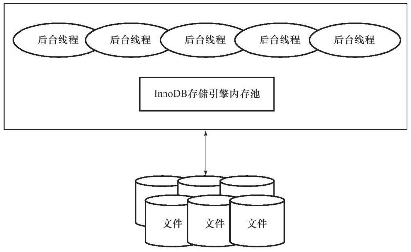
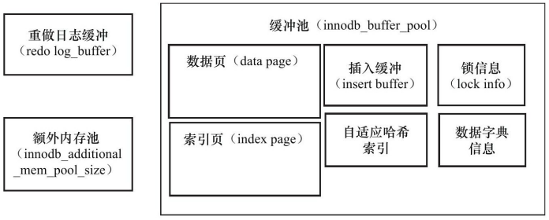
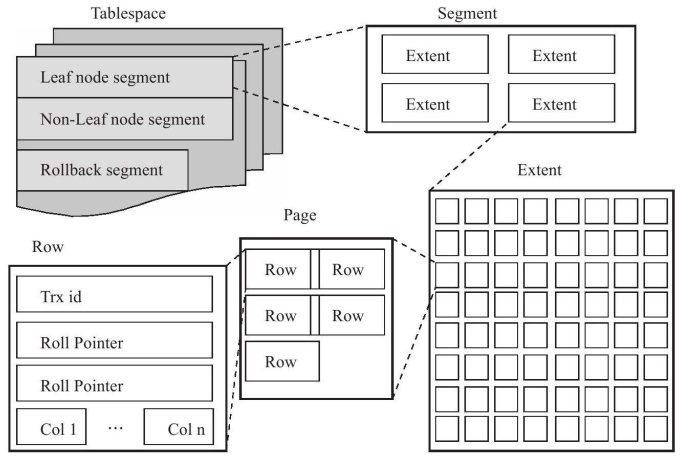
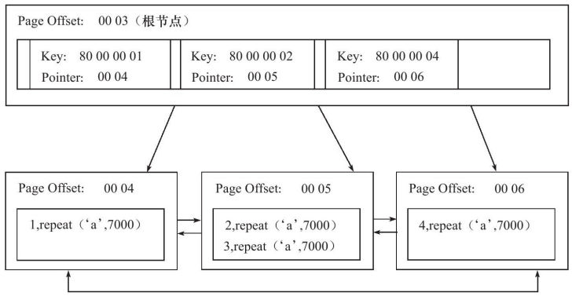
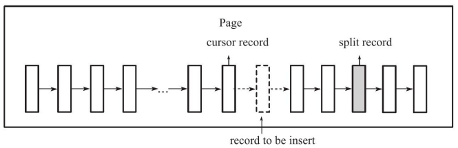

前言
写这篇博文是为了将自己学习完InnoDB的内容梳理一遍。InnoDB是个很复杂很庞大的存储引擎，其中的细节显然是不可能通过一篇文章或者笔记完整地描述出来的，所以这里主要目的是“补漏”，也就是将以前学习MySQL没有了解到的InnoDB“专属”的内容进行梳理和记录。
学习的主要来源是姜承尧老师的《MySQL技术内幕——InnoDB存储引擎》一书，国内除了这本书以外，也鲜有对InnoDB进行详细介绍的书籍。应用固然重要，但是正确理解技术本身才能够从根本上解决问题。最近这段时间看的技术向的书不少，其中不乏一些夸夸其谈，滥竽充数的书，尤其在架构设计书中最为明显，部分作者直接使用官方文档的图文翻译来填充内容，如果没有个人观点和核心的代码剖析，这些书就是IT书架上的混子。当然，从姜老师这本书可以读得出来，代码、配图和很多细节的描述都是出自一个有多年技术积累的专家之手，在现在大量浑水摸鱼的IT图书市场上就显得特别的宝贵。
有几句话姜老师在前言中提及到，我认为特别重要：
- 不要相信任何的“神话”，学会自己思考
- 不要墨守成规，大部分人都知道的事情可能是错误的
- 不要相信网上的传言，去测试，根据自己的实践做出决定
- 花时间充分地思考，敢于提出质疑
这些都是作为开发者特别需要做到的，所以花时间充分地思考，是我在这篇博客最想做到的事情，希望能够通过思考真正掌握书中的内容。
InnoDB架构模型
 内存池：
- 维护所有进程/线程需要访问的多个内部数据结构
- 缓存磁盘上的数据，方便快速读取，同时在对磁盘文件的数据修改之前在这里缓存
- redo log缓冲
后台线程：
- 负责刷新内存池中的数据，保证缓冲池中的内存缓存是最近的数据
- 将修改的数据文件刷到磁盘文件
- 保证发生异常的情况下InnoDB能够恢复到正常运行状态
内存

缓冲池
设置原因：CPU与磁盘速度之间的鸿沟。
在数据库中读取页的操作，先从磁盘读取到缓冲池中，读取相同页的时候判断是否在缓冲池中直接命中。
缓冲池中缓存的数据页类型有：
- 索引页
- 数据页
- undo页
- insert buffer
- 自适应哈希索引
- 引擎的锁信息
- 数据字典信息
缓冲池允许有多个，通过参数配置，默认为1。
LRU List、Free List、Flush List
最频繁使用的页在LRU列表的前端，而最少使用的页在LRU列表的尾端。
InnoDB中设置了midpoint位置，读取到新的页，虽然是“Recently Used”，但是先插入到midpoint位置而不是前端，默认配置下处于LRU列表长度的5/8处，midpoint前的列表称为new列表，midpoint后的列表称为old列表。使用midpoint优化的原因是在读取页的时候，因为会导致尾端的页被刷出LRU列表，如果直接在前端插入大量的页（一般为索引或扫描操作）会将LRU列表大量页刷出，而这部分插入的操作可能仅是一次性的，因此需要先将这些页放在midpoint位置，然后后续如果确实频繁使用再加入LRU列表的热端。
Free列表表示可用的页，如果Free列表有可用的空闲页，就会将页从Free列表中删除、加入LRU列表中；如果没有，则要从LRU列表尾端淘汰，将内存分配给新的页。可以理解成LRU长度增加，Free长度就减少，Free没有的时候还需要插页面就需要从LRU淘汰。
在LRU列表中的页被修改后，称为dirty page，缓冲区与磁盘中的数据不一致，这时候通过CHECKPOINT机制刷回磁盘，Flush列表中的页即为脏页列表，脏页既存在于LRU列表中也存在与Flush列表中，前者保证页的可用性，后者管理页刷回磁盘。
Checkpoint
Checkpoint是为了解决：
- 缩短数据库的恢复时间，宕机后不需要重做所有日志，而是从Checkpoint开始
- 缓冲池不够用时，溢出尾端页，若为脏页，将脏页刷新回磁盘
- redo log不需要时，会被覆盖重用；需要使用就会强制产生Checkpoint，将缓冲池中的页至少刷新到当前重做日志的位置
InnoDB使用LSN（Log Sequence Number）来标记版本，Checkpoint也有LSN。
Checkpint有两种：
- Sharp Checkpoint，发生在数据库关闭时将所有脏页数据刷新回磁盘
- Fuzzy Checkpoint，刷新部分脏页回磁盘
Fuzzy Checkpoint发生在：
- Master Thread Checkpoint，以每秒或者每10秒的速度刷新一定比例的脏页回磁盘
- FLUSH_LRU_LIST Checkpoint，为了保证LRU列表有空闲页（数量可配置）可供使用
- Async/Sync Flush Checkpoint，定义：
ync_water_mark = 75% * total_redo_log_file_size
sync_water_mark = 90% * total_redo_log_file_size</code></pre>
在checkpoint age（redo_lsn – checkpoint_lsn）大于async水位的时候触发Async Flush，大于sync水位的时候触发Sync Flush，保证刷完后age小于async水位
Master Thread
InnoDB主要工作都是在Master Thread中完成的，内部由多个循环组成：
- 主循环（loop）
- 后台循环（background loop）
- 刷新循环（flush loop）
- 暂停循环（suspend loop）
主循环执行每秒操作和每10秒操作。每秒操作包括：
- 日志缓冲刷新到磁盘，即使事务还没提交（总是，因此再大的事务提交时间也很短）
- 合并插入缓冲（可能，IO小于5% innodb_io_capacity的时候执行）
- 至多刷新innodb_io_capacity个InnoDB的缓冲池中的脏页到磁盘（可能，判断阈值）
- 如果上一步没有超过阈值，又开启了自适应刷新，通过函数判断合适的数量脏页刷新到磁盘
- 如果用户没有活动，切到后台循环（可能）
每10秒操作包括：
- 刷新100个脏页到磁盘（可能，IO小于200次的时候执行）
- 合并至多5% innodb_io_capacity插入缓冲（总是）
- 将日志缓冲刷新到磁盘（总是）
- 删除无用的undo页（总是，因为undo页需要保留给MVCC，如果确认无用会在这里删除掉）
- 刷新innodb_io_capacity个或10% innodb_io_capacity个脏页到磁盘（总是，判断脏页比例，如果超过70%刷innodb_io_capacity个，小于70%刷10% innodb_io_capacity个）
后台循环操作包括：
- 删除无用的undo页（总是）
- 合并innodb_io_capacity个插入缓冲（总是）
- 跳回到主循环（总是）
- 不断刷新innodb_io_capacity个页直到符合条件（可能，在flush loop完成）
如果flush loop也没有事情可以做，切换到suspend loop，挂起Master Thread，等待事件发生。
伪代码：
void master_thread() {
goto loop;
loop：
for (int i = 0; i < 10; i++) {
thread_sleep(1) //sleep 1 second
do log buffer flush to disk
if (last_one_second_ios < 5 % innodb_io_capacity)
do merge 5 % innodb_io_capacity insert buffer
if (buf_get_modified_ratio_pct > innodb_max_dirty_pages_pct)
do buffer pool flush 100 % innodb_io_capacity dirty page
else if enable adaptive flush
do buffer pool flush desired amount dirty page
if (no user activity)
goto backgroud loop
}
if (last_ten_second_ios < innodb_io_capacity)
do buffer pool flush 100 % innodb_io_capacity dirty page
do merge 5 % innodb_io_capacity insert buffer
do log buffer flush to disk
do full purge
if (buf_get_modified_ratio_pct > 70 % )
do buffer pool flush 100 % innodb_io_capacity dirty page
else
dobuffer pool flush 10 % innodb_io_capacity dirty page
goto loop
background loop:
do full purge
do merge 100 % innodb_io_capacity insert buffer
if not idle:
goto loop:
else :
goto flush loop
flush loop:
do buffer pool flush 100 % innodb_io_capacity dirty page
if (buf_get_modified_ratio_pct > innodb_max_dirty_pages_pct)
go to flush loop
goto suspend loop
suspend loop:
suspend_thread()
waiting event
goto loop;
}</code></pre>
InnoDB关键特性
Insert Buffer
插入缓冲和数据页一样，也是物理页的一个组成部分。
在B+树上数据是按照聚集索引的值顺序存放的，在非聚集索引中插入数据则是离散的，因此随机读取导致插入性能下降。InnoDB在非聚集索引的插入或者更新操作时，不是一次直接插入索引页中，而是先判断插入的非聚集索引页是否在缓冲池中，若在则直接插入，若不在则放到一个Insert Buffer对象中，再通过一定频率进行Insert Buffer和辅助索引页子节点的merge操作，这样通常能够将多个插入合并到一个操作中（因为在同一个索引页中），提高非聚集索引的插入性能。
Insert Buffer的使用需要同时满足两个条件：
- 索引是辅助索引
- 索引不是唯一的
Insert Buffer在发生宕机的时候因为没有合并到非聚集索引中去，恢复可能需要很长时间。同时索引不是唯一的目的是为了避免去非聚集索引中判断唯一性，如果需要判断那么就需要离散读取，Insert Buffer就失去了意义。
InnoDB从1.0.x版本引入Change Buffer作为升级，对INSERT、DELETE、UPDATE操作都进行缓冲，对应Insert Buffer、Delete Buffer、Purge Buffer。对记录的Update操作分为两个过程：标记删除、真正删除，Delete Buffer对应第一个过程，Purge Buffer对应第二个过程。
Merge Insert Buffer可能发生在以下几种情况：
- 辅助索引页被读取到缓冲池时，如执行SELECT操作时，检查Insert Buffer Bitmap页确认该辅助索引页是否有记录存放在Insert Buffer B+树中
- Insert Buffer Bitmap页追查到该辅助索引页已经没有可用空间（小于1/32页）时，强制一个读取辅助索引页进行合并
- Master Thread
两次写
在写某个页到表中时发生宕机，页只写了部分，称为部分写失效。redo log是物理操作的记录，如偏移量800,写’aaaa’，因为页本身发生损坏，所以重做没有意义，因此需要一个页的副本，通过页的副本还原页，再进行重做，这就是doublewrite。
在对缓冲池的脏页进行刷新时，并不直接写磁盘，通过memcpy将脏页先复制到doublewrite buffer，之后通过doublewrite buffer分两次，每次1MB顺序地写入共享表空间的物理磁盘上，然后调用fsync函数同步磁盘，避免缓冲写带来的问题。
自适应哈希索引
构造AHI（Adaptive Hash Index）的要求是对页的连续访问模式必须是一样的，并且以该模式访问了100次，页通过该模式访问了N次，N=页中记录/16。
异步IO
用户请求可能需要扫描多个索引页，进行多次IO操作。在扫描完一个页后进行下一次扫描是没有必要的，用户可以在发出一个IO请求后立即再发出另一个IO请求，当全部IO请求发送完毕后等待所有IO操作完成，这就是AIO。
AIO的优势是可以进行IO Merge操作，将连续的IO操作合并为1个IO请求。
刷新邻接页
当刷新一个脏页时，InnoDB会检测该页所在的区（extent）的所有页，如果是脏页，则一起进行刷新，通过AIO可以合并成一个IO操作。
文件
组成MySQL和InnoDB的文件有很多类：
- 参数文件
- 日志文件
- socket文件
- pid文件
- MySQL表结构文件
- 存储引擎文件
二进制日志
binary log记录了对MySQL数据库执行更改的所有操作，但是不包括SELECT和SHOW这类操作，但是操作没有导致数据库发生变化也可能会被写入bin log中，如UPDATE结果为0 row affected的语句。
bin log主要有以下作用：
- 恢复
- 复制
- 审计
当使用事务的表存储引擎时，所有未提交的bin log会被记录到一个缓存中去，等待事务提交时将缓存中的日志写入bin log文件，缓存默认大小为32k，并且是基于session的，也就是说MySQL会给不同session分配不同的缓存，因此缓存不能设置太大；当bin log超过缓存大小时，会被写入临时文件中去，因此该值也不能设置得太小。
如果当前数据库是slave角色，它不会将从master取得并执行的bin log写入自己的bin log中去，通过配置也可以开启写入以实现master->slave->slave的架构。
binlog_format控制bin log的格式，可以为STATMENT、ROW和MIXED：
- STATMENT格式记录的是SQL语句
- ROW记录表的行更改情况
- MIXED默认使用STATMENT格式，一些情况下使用ROW格式
InnoDB表空间文件
InnoDB将存储的数据按照tablespace存放，默认10MB、名为ibdata1的文件，设置innodb_data_file_path后所有基于InnoDB的表的数据都会记录到该tablespace中，若设置了innodb_file_per_table，每个InnoDB的表都会产生一个独立的表空间：表名.ibd。
InnoDB重做日志文件
默认情况下ib_logfile0和ib_logfile1是redo log file，他们记录了InnoDB存储引擎的事务日志，实例失败时可以使用重做日志回复到掉电前的时刻来保证数据的完整性。
redo log和bin log的区别在于：
- bin log是MySQL层面的日志，记录的是所有（包括不同引擎）的日志；而redo log只记录InnoDB引擎本身的日志
- bin log记录的是一个事物的具体操作内容，是逻辑日志；redo log记录的是关于每个页的更改的物理情况
- bin log仅在事务提交前进行提交，只写磁盘一次；redo log在事务进行的过程中不断有redo entry被写入redo log中
表
索引组织表
InnoDB中一个很重要的概念就是表都是根据主键顺序组织存放的，成为索引组织表（index organized table）。没有显式定义主键的时候会按照如下方式选择或创建主键：
- 非空唯一索引，如有多个，按照定义索引的顺序取第一个
- 无符合条件，自动创建6字节大小的主键
InnoDB逻辑存储结构
InnoDB中数据被放在tablespace中，由段（segment）、区（extent）、页（page）组成。
 默认情况下InnoDB有一个tablespace ibdata1，通过设置innodb_file_per_table也可以改为每个表内的数据（数据、索引和插入缓冲Bitmap）放到单独的tablespace，这种情况下其他类型的数据（如回滚信息、插入缓冲索引页、系统事务信息、double write buffer等）仍在共享表空间中，因此共享表空间仍会一直增大。
表空间是由各个段组成的，因为InnoDB是索引组织表，索引段就是B+树的非叶子节点，数据段是B+树的叶子节点。
区是连续的页组成的空间，每个区的大小为1MB，为了保证区中页的连续性，InnoDB会一次从磁盘申请4-5个区，默认情况下一个页16KB，一个区中有64个连续的页。
页是InnoDB磁盘管理的最小单位。常见页类型有：
- 数据页（B-tree Node）
- undo页（Undo Log Page）
- 系统页（System Page）
- 事务数据页（Transaction System Page）
- 插入缓冲位图页（Insert Buffer Bitmap）
- 插入缓冲空闲列表页（Insert Buffer Free List）
- 未压缩的二进制大对象页（Uncompressed BLOB Page）
- 压缩的二进制大对象页（Compressed BLOB Page）
InnoDB是row-oriented，每个页最多允许存放16KB/2-200行记录。
InnoDB行记录格式
InnoDB提供了Compact和Redundant两种格式来存放行记录数据，默认为Compact。一个页中存放的行数据越多，其性能就越高。
Compact行记录的存储方式为：
<th>
NULL标记位
</th>
<th>
记录头信息
</th>
<th>
列1数据
</th>
<th>
列2数据
</th>
<th>
…
</th>
- 变长字段长度列表，顺序按照列的顺序逆序放置，若列长度小于255字节则用1字节表示，否则用2字节表示
- NULL标志位，指示该行中是否有NULL值，有则用1表示
- record header，固定占用5字节
- 每个列的数据，NULL不占该部分任何空间，事务ID列和回滚指针列也包含在内，若没有主键还会增加一个6字节的rowid列
InnoDB可以将某些数据存储在真正的数据页之外，如BLOB这类大对象列。要注意的是BLOB可以不将数据放在溢出页面，VARCHAR类型也有可能被存放为溢出数据。
首先VARCHAR类型上限是65535字节，但是因为有别的开销，所以实际测试发现最大长度为65532：
mysql > CREATE TABLE test(
-> a VARCHAR(65535)
-> )CHARSET=latin1 ENGINE=InnoDB;
ERROR 1118(42000):Row size too large.The maximum row size for the used table type,not counting BLOBs,is 65535.You have to change some columns to TEXT or BLOBs</code></pre>
mysql > CREATE TABLE test(
-> a VARCHAR(65532)
-> )CHARSET=latin1 ENGINE=InnoDB;
Query OK,0 rows affected(0.15 sec)</code></pre>
如果没有将SQL_MODE设为严格模式，会抛出warning并转换为TEXT类型。
上述创建的65532的表字符类型为latin1,如果转换为UTF-8：
mysql> CREATE TABLE test(
-> a VARCHAR(65532)
-> )CHARSET=UTF8 ENGINE=InnoDB;
ERROR 1074(42000):Column length too big for column'a'(max=21845);use BLOB or TEXT instead</code></pre>
因此VARCHAR(N)中的N指的是字符的长度，而限制的65535是字节长度。
要注意的是，65535长度是指所有VARCHAR列的长度总和，如果列的长度超过这个长度，依然无法创建。
InnoDB的页为16KB，即16384字节，实际上是不能存放65532字节长度的数据的，此时插入长度为65532的记录，会观察到tablespace中有一个数据页节点B-tree Node，另外有Uncompressed BLOB Page，而实际上数据页中只保存了VARCHAR(65532)的前768字节的前缀数据，之后是偏移量，指向行溢出页。
InnoDB中每页至少要有两条行数据，如果页中只放得下一条记录，那么InnoDB就会自动将行数据存到溢出页中。同样如果TEXT或BLOB类型的数据能够保证一个页能存放两条记录，那么他们也是可以放在数据页中的。
对于多字节的字符编码，CHAR类型不再代表固定长度的字符串，如UTF-8下的CHAR(10)列，最小可以存储10字节的字符，最大可以存储30字节的字符，因此对于多字节编码的CHAR数据类型，InnoDB在内部将其视为变长字符类型。
分区表
分区的过程是将一个表或索引分解为多个更小、更可管理的部分。逻辑上的一个表或索引由数十个物理分区组成。
MySQL不支持垂直分区，并且是局部分区索引，即一个分区中既存放了数据又存放了索引，而全局分区，数据存放在各个分区中，索引放在一个对象中，目前并不支持。
分区主要应该用于数据库高可用性的管理，如果使用不当会对性能产生负面的影响。
目前MySQL支持以下几种类型的分区：
- RANGE：基于一个给定的连续区间的列值被放入分区
- LIST：和RANGE类似，但是面向的是离散的值
- HASH：根据用户自定义的表达式的返回值来进行分区，不能为负数
- KEY：根据MySQL提供的哈希函数来进分区
如果表中存在主键或唯一索引时，分区列必须是唯一索引的一个组成部分。
RANGE
CREATE TABLE t(
id INT
)ENGINE=INNDB
PARTITION BY RANGE(id)(
PARTITION p0 VALUES LESS THAN(10),
PARTITION p1 VALUES LESS THAN(20));</code></pre>
分区后表不再由一个ibd文件组成：
mysql> system ls-lh/usr/local/mysql/data/test2/t*
-rw-rw----1 mysql mysql 8.4K 7月31 14:11/usr/local/mysql/data/test2/t.frm
-rw-rw----1 mysql mysql 28 7月31 14:11/usr/local/mysql/data/test2/t.par
-rw-rw----1 mysql mysql 96K 7月31 14:12/usr/local/mysql/data/test2/t#P#p0.ibd
-rw-rw----1 mysql mysql 96K 7月31 14:12/usr/local/mysql/data/test2/t#P#p1.ibd</code></pre>
对于插入不在分区中定义的值时MySQL会抛出一个异常，也可以通过对分区添加一个MAXVALUE值的分区来解决。
通过分区，可以在管理上直接删除某些数据的分区，而不需要DELETE...WHERE...：
mysql> alter table sales drop partition p2008;
Query OK,0 rows affected(0.18 sec)
Records:0 Duplicates:0 Warnings:0</code></pre>
在查询特定条件时，如果可以只搜索部分分区，SQL优化器不搜索所有分区称为Partition Pruning。启用分区后，应该根据分区的特性来编写最优的SQL语句。
LIST
LIST分区和RANGE分区很相似，只是分区列的值是离散而非连续的：
mysql> CREATE TABLE t(
-> a INT,
-> b INT)ENGINE=INNODB
-> PARTITION BY LIST(b)(
-> PARTITION p0 VALUES IN(1,3,5,7,9),
-> PARTITION p1 VALUES IN(0,2,4,6,8)
-> );
Query OK,0 rows affected(0.26 sec)</code></pre>
在插入多个数据行时遇到分区未定义的值，MyISAM会将之前的行数据都插入，之后的数据不插入；但InnoDB则会视为一个事物，因此没有任何数据插入。
HASH分区
CREATE TABLE t_hash(
a INT,
b DATETIME
)ENGINE=InnoDB
PARTITION BY HASH(YEAR(b))
PARTITIONS 4;</code></pre>
表示将表t按照日期列b分为4个区，因为：
MOD(YEAR('2010-04-01'), 4)
=MOD(2010,4)
=2</code></pre>
因此’2010-04-01’这条数据将会被放入分区p2中。
如果PARTITIONS没有声明，那分区数量将默认为1。
KEY分区
KEY分区和HASH分区类似，不过HASH分区使用用户定义的函数进行分区，KEY分区使用MySQL数据库提供的函数进行分区，这些函数基于和PASSWORD()一样的运算法则：
mysql> CREATE TABLE t_key(
-> a INT,
-> b DATETIME)ENGINE=InnoDB
-> PARTITION BY KEY(b)
-> PARTITIONS 4;
Query OK,0 rows affected(0.43 sec)</code></pre>
COLUMNS分区
MySQL5.5开始支持COLUMNS分区，可以直接使用非整型数进行分区，而其他几种必须为整型或转化为整型：
CREATE TABLE t_columns_range(
a INT,
b DATETIME
)ENGINE=INNODB
PARTITION BY RANGE COLUMNS(B)(
PARTITION p0 VALUES LESS THAN('2009-01-01'),
PARTITION p1 VALUES LESS THAN('2010-01-01')
);</code></pre>
子分区
MySQL允许在RANGE和LIST的分区上再进行HASH或KEY的子分区：
mysql> CREATE TABLE ts(a INT,b DATE)engine=innodb
-> PARTITION BY RANGE(YEAR(b))
-> SUBPARTITION BY HASH(TO_DAYS(b))
-> SUBPARTITIONS 2(
-> PARTITION p0 VALUES LESS THAN(1990),
-> PARTITION p1 VALUES LESS THAN(2000),
-> PARTITION p2 VALUES LESS THAN MAXVALUE
-> );
Query OK,0 rows affected(0.01 sec)</code></pre>
mysql> system ls-lh/usr/local/mysql/data/test2/ts*
-rw-rw----1 mysql mysql 8.4K Aug 1 15:50/usr/local/mysql/data/test2/ts.frm
-rw-rw----1 mysql mysql 96 Aug 1 15:50/usr/local/mysql/data/test2/ts.par
-rw-rw----1 mysql mysql 96K Aug 1 15:50/usr/local/mysql/data/test2/ts#P#p0#SP#p0sp0.ibd
-rw-rw----1 mysql mysql 96K Aug 1 15:50/usr/local/mysql/data/test2/ts#P#p0#SP#p0sp1.ibd
-rw-rw----1 mysql mysql 96K Aug 1 15:50/usr/local/mysql/data/test2/ts#P#p1#SP#p1sp0.ibd
-rw-rw----1 mysql mysql 96K Aug 1 15:50/usr/local/mysql/data/test2/
ts#P#p1#SP#p1sp1.ibd
-rw-rw----1 mysql mysql 96K Aug 1 15:50/usr/local/mysql/data/test2/ts#P#p2#SP#p2sp0.ibd
-rw-rw----1 mysql mysql 96K Aug 1 15:50/usr/local/mysql/data/test2/ts#P#p2#SP#p2sp1.ibd</code></pre>
分区问题
分区中总是视NULL值是小于任何一个非NULL值。对于RANGE分区，NULL值会落在最左边的分区；对于HASH和KEY，任何分区函数都会将含有NULL值的记录返回为0。
对于不满足Partition Pruning的分区，对于一张大表，一般B+树需要2-3次磁盘IO，而如果需要扫描多个分区，如10个分区，每个分区查询开销为2-3次IO，则一共需要20-30次IO，有可能会带来严重的性能问题。
索引与算法
InnoDB支持以下几种常见的索引：
- B+树索引
- 全文索引
- 哈希索引
B+树索引并不能找到一个给定键值的具体行，它只能找到被查找数据行所在的页，然后数据库通过把页读入到内存，再在内存中进行查找，最后得到想要的数据。
B+树
B+树是为磁盘或者其他直接存取辅助设备设计的一种平衡查找树，所有记录节点都是按键值的大小顺序存放在同一层的叶子节点上，由各叶子节点指针进行连接。
B+树的插入操作
B+树的插入必须保证插入后的叶子节点中的记录依然排序：
- Leaf Page未满、Index Page未满时，直接将记录插入到叶子节点
- Leaf Page满、Index Page未满时，拆分Leaf Page，将中间的节点（指的是Leaf Page几个节点的中间）放入到Index Page中，小于中间节点的记录放左边，大于中间节点的记录放右边
- Leaf Page满、Index Page满时，拆分Leaf Page，小于中间节点的记录放左边，大于中间节点的记录放右边；拆分Index Page，原理同上，此时树的高度+1
因为拆分页操作意味着磁盘的操作，所以应该尽量减少。因此，B+树同样提供了类似平衡二叉树的旋转（Rotation）功能。当Leaf Page已满，而左右兄弟节点没满时，B+树不会急于去做拆分页的操作，而是将记录移到所在页的兄弟节点上，通常左兄弟会被首先检查用来做旋转操作。
B+树的删除操作
与插入通过“满”来控制不同，删除通过使用填充因子来控制树的变化。50%是填充因子可设的最小值。B+树的删除同样要保证删除后叶子节点中的记录依然排序：
- Leaf Page大于填充因子、Index Page大于填充因子，直接删除，如果该节点是Index Page节点，用该节点的右节点代替
- Leaf Page小于填充因子、Index Page大于填充因子，合并Leaf Page和它的兄弟节点，同时更新Index Page
- Leaf Page小于填充因子、Index Page小于填充因子，合并Leaf Page和它的兄弟节点，更新Index Page，合并Index Page和它的兄弟节点
B+树索引
B+树索引具有高扇出性，高度一般都在2-4层，说明查找某一键值的行记录最多只需要2-4次IO。
B+树索引可以分为聚集索引和辅助索引，区别在于叶子节点存放的是否是一整行的信息。
聚集索引
聚集索引就是按照每张表的主键构造一颗B+树，同时叶子节点中存放的即为整张表的行记录数据，也将聚集索引的叶子节点称为数据页。
 数据只能按照一颗B+树来排序，因此每张表只能拥有一个聚集索引，由于定义了数据的逻辑顺序，按照聚集索引能够特别快地针对范围值查找。数据页上存放的是完整的每行的记录，而非数据页的索引页中存放的是键值和指向数据页的偏移量，而不是一个完整的行记录。
辅助索引
辅助索引的叶子节点除了包含键值意外，每个叶子节点中的索引行还包含了一个书签，用来告诉InnoDB存储引擎哪里可以找到与索引对应的行数据。由于InnoDB存储引擎是索引组织表，因此辅助索引的数千就是相应行数据的聚集索引键。
如果在一棵高度为3的辅助索引树中查找数据，那需要对这棵辅助索引树便利3次找到制定的主键，如果聚集索引树的高度同样为3，那还需要对聚集索引进行3次查找，最终找到一个完整的行数据所在的页，因此一共需要6次逻辑IO访问以得到最终的一个数据页。
B+树索引的分裂
在前面讲到的B+树的插入删除，和数据库中B+树索引的情况可能有所不同，因为B+树索引页的分裂并不总是从页的中间记录开始的，这样会导致页空间的浪费，例如自增ID列上：
1、2、3、4、5、6、7、8、9</code></pre>
现在需要插入10，按照之前的理论应该是将记录5作为分裂点记录，得到P1、P2：
P1：1、2、3、4
P2：5、6、7、8、9、10</code></pre>
由于是自增ID，现在P1永远不会有新数据，浪费了空间；P2又会再次进行分裂。
InnoDB的Page Header中有以下几个部分用来保存插入的顺序信息：
- PAGE_LAST_INSERT
- PAGE_DIRECTION
- PAGE_N_DIRECTION
通过这些信息，InnoDB决定向左还是向右分裂，同时决定分裂点记录是哪一个。若插入是随机的则取中间记录，若往一个方向插入的记录数量为5,并且目前已经定位到的记录之后还有3条记录，则分裂点记录为定位到的记录后的第三条记录，否则分裂点记录就是待插入的记录。在自增时页的分裂通常都会在记录自身，避免前面的浪费空间的情况。

Fast Index Creation
在对辅助索引的创建，InnoDB会对创建索引的表加上一个S锁，这样创建过程中只能对该表进行读操作，这改变了以前创建索引时，MySQL通过创建新临时表再导入数据的方式（会导致服务不可用）的情况。
Cardinality
Cardinality是一个预估值，代表索引中不重复记录数量的预估值，Cardinality/n_rows_in_table应该尽可能接近1（高选择性），太小的时候用户应该考虑是否还需要创建这个索引。
Cardinality在不同引擎都有，因此对Cardinality的统计是放在存储引擎层进行的。数据库对于Cardinality的统计是通过采样进行的。
Cardinality的更新发生在INSERT和UPDATE操作中，因为不可能每次操作都要更新Cardinality信息，InnoDB内部对Cardinality信息的更新策略为：
- 表中1/16的数据已发生过变化
- stat_modified_counter > 2000000000
具体采样的方法是默认对8个叶子节点进行采样：
- 取得B+树索引中叶子节点的数量A
- 随机取B+树中8个叶子节点，统计每个页不同的个数P1、P2、…、P8
- Cardinality = (P1 + … + P8) * A / 8
因为采样8个叶子节点是随机的，因此Cardinality每次取得的值可能不同。在目前的InnoDB版本中欧给你采样数量是可以配置的，同时对于采样结果中的NULL值也可以配置为忽略（不统计）、多个NULL统计为1个不重复值、多个NULL记为多个不重复值。
B+树索引的应用
联合索引
联合索引与单个索引创建方法一样，其实和之前讨论的单个键值的B+树并没有什么不同，键值都是排序的，按照索引指定列的顺序进行存放。
要注意的是，在优化器选择索引的时候，例如在某个表(a,b)上有索引a和索引(a,b)，当查询where a=xx的时候，优化器会选择使用索引a而不用索引(a,b)，因为该索引只包含了单个键值，理论上一个页能够存放的数据应该更多，通过扫描更少的页就能拿到对应的记录。
覆盖索引
通过在辅助索引中就能直接查到记录，而不用查询聚集索引中的记录，叫做覆盖索引。使用覆盖索引的一个好处是辅助索引不包含整行记录的所有信息，其大小要远小于聚集索引，因此可以减少大量的IO操作。
优化器选择不用索引的情况
SELECT * FROM orderdetails WHERE orderid>10000 AND orderid<102000;</code></pre>
假设这个表上有(orderid, productid)联合主键，orderid辅助索引，最后在EXPLAIN中看到优化器选择了主键的聚集索引，也就是表扫描（table scan），而非orderid辅助索引扫描（index scan），因为用户需要查整行信息，而orderid不能覆盖到我们要查询的信息，还需要根据书签进行查找，从顺序的scan操作变成了离散读操作。如果数量较少的情况下优化器会选择辅助索引，如果占比较大（一般20%左右）的时候，优化器因为顺序读离散读的问题，还是会选择用聚集索引来查找数据。
Multi-Range Read优化
MRR优化目的是为了减少磁盘的随机访问：
- 在使用辅助索引时，首先根据得到的查询结果，按照主键进行排序，并且按照主键顺序进行书签查找，
- 减少缓冲池中页被替换的次数
- 批量处理对键值的查询操作
Index Condition Pushdown优化
在根据查询取出索引数据时，尽管索引对某些查询可能没有帮助（例如LIKE），但是可以在取出时就进行过滤数据，而不需要等全部取出后再进行过滤。Extra列Using index condition提示优化器选择了ICP优化。